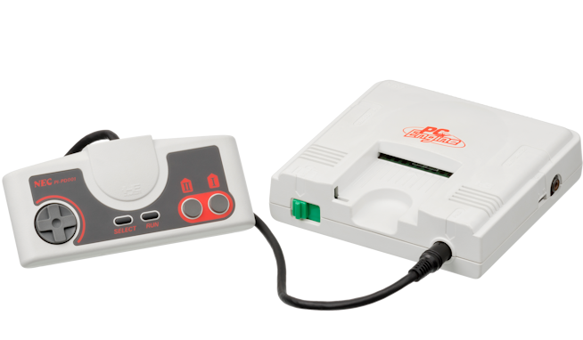
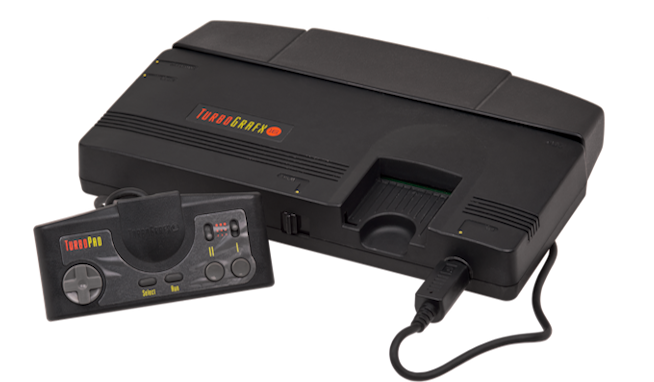

NEC PC Engine
Lanzada en Japón a finales de 1987, la PC Engine revolucionó el mercado
nipón por su diseño increíblemente compacto y sus tarjetas de juego en formato
HuCard (similares a una tarjeta de crédito). Contaba con una CPU de 8 bits
y una potente GPU dual de 16 bits que le permitía poner cientos de colores en
pantalla y ofrecer conversiones casi perfectas de los salones recreativos.
Fue un éxito masivo en Japón, llegando a superar en ventas a la mismísima Famicom
de Nintendo durante sus primeros años de vida en el mercado.

NEC TurboGrafx-16
Adaptada para el mercado occidental, la TurboGrafx-16 se lanzó en Norteamérica
en 1989. Para intentar encajar con los gustos americanos, NEC cambió drásticamente
el diseño estilizado japonés por una carcasa gris mucho más grande y robusta. El "-16"
de su nombre se añadió como estrategia comercial para destacar su arquitectura gráfica.
Aunque compartía el mismo catálogo de juegos que su contraparte oriental, sufrió una dura
competencia frente a la SEGA Genesis y la Super Nintendo, lo que limitó su éxito comercial
en Occidente.
